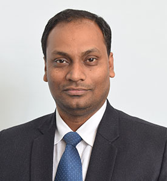

Committee
Chief Patron

Hon'ble Chancellor
GLA University, Mathura, India
Co-Chief Patron

Hon'ble Pro Chancellor
GLA University, Mathura, India
Patron

Vice-Chancellor
GLA University, Mathura, India
Patron

Pro-Vice-Chancellor
GLA University, Mathura, India
Facilitator

Registrar
GLA University, Mathura, India
Facilitator

Professor & Dean
GLA University,Mathura India
General Chair

Dr. Rohit Agarwal
Associate Professor, Department of CEA
GLA University, Mathura, India
Associate Professor, Department of CEA
GLA University, Mathura, India
General Chair
Associate Dean & Professor, Department of CEA
GLA University, Mathura, India
Convener

Associate Professor, Department of CEA
GLA University, Mathura, India
Co-Convener

Associate Professor, Department of CEA
GLA University, Mathura, India
Technical Program Committee Chair
Professor, Electronics Engineering
AMU, Aligarh, India
Publication Chair
Associate Professor & Dean
SRMU, Lucknow, India
Advisory Committee
- Shri Neeraj Agrawal, CEO, GLA University, Mathura, India
- Shri Vivek Agrawal, CFO, GLA University, Mathura, India
- Dr. Adarsh Kumar Pandey, Sunway University, Malaysia
- Dr. Afaq Ahmad, Sultan Qaboos University, Oman
- Dr. Ajai Jain, IIT Kanpur, India
- Dr. Ajay Rana, AMITY University Noida, India
- Dr. Akhilesh Tiwari, IIIT Allahabad, India
- Dr. Alaknanda Ashok, FET Pantnagar University, Pantnagar, India
- Dr. Amit Agarwal, Dr.APJ Abdul kalam Institute of Technology, Tanakpur, India
- Dr. Anil Kumar Singh, MNNIT Allahabad, India
- Dr. Ashok Yadav, DEI Agra, India
- Dr. Aseem Chandel, Rajkiya Engineering College Mainpuri, India
- Dr. B.K. Panigrahi, IIT Delhi, India
- Dr. B.D.K. Patro, Rajkiya Engineering College Kannauj, India
- Dr. Brijesh Singh, KIET, India
- Dr. Chandan Mazumdar, Jadhavpur University, India
- Dr. Chiranjeev Kumar, IIT(ISM) Dhanbad, India
- Dr. Danish Ather, Sharda University, Uzbekistan
- Dr. David Asirvatham, Taylor's University, Malaysia
- Dr. Deepak Garg, Bennett University Noida, India
- Dr. Dhram Singh, Namibia University Namibia Southwest Africa
- Dr. Divakar Yadav, NIT Hamirpur, India
- Dr. Fakhrul Hazman Yusoff, UITM, Malaysia
- Dr. Fushuan Wen, Zhejiang University, China
- Dr. G.C. Nandi, IIIT Allahabad, India
- Dr. G.K. Sharma, ABV-IIITM, Gwalior, India
- Dr. Ganesh P. Sahu, MNNIT, Allahabad, India
- Dr. Hari R., IBM Innovation Center for Education, India
- Dr. Haider Banka, IIT(ISM) Dhanbad, India
- Dr. Ishak Aris, Universiti Putra, Malaysia
- Dr. Ishfaq Ahmad, University of Texas, Arlington, USA
- Dr. J.G. Singh, AIT, Bangkok, Thialand
- Dr. J.Ramkumar , IIT Kanpur, India
- Dr. J.P. Gupta, Ex. VC, Jaypee institute of Information Technology, Noida
- Dr. Joydeep Mitra, Michigan State University, USA
- Dr. Jih-Sheng (Jason) Lai, Virginia Polytechnic Institute and State University, USA
- Dr. Jun Wang, City University of HongKong, Hongkong
- Dr. Karmeshu, S.N.University, India
- Dr. Kumar Vaibhav Srivastava, IIT Kanpur, India
- Dr. Krishan Chandra Mishra, WIT, Dehradun, India
- Dr. Kukjin Chun, Seoul National University, South koria
- Dr. Lakshminarayana Sadasivuni, NIO
- Dr. M.M. Sufyan Beg, AMU Aligarh, India
- Dr. M. C. Govil, NIT Sikkim, India
- Dr. M. N. Hoda, BVICAM New Delhi, India
- Dr. M.K. Dutta, AKTU, Lucknow, India
- Dr. Mario Divan, National University of La Pampa, Argintina
- Dr. Masoud Mohammadian, University of Canberra, Australia
- Dr. Mike.Hinchey, Lero-the Irish Software Engineering Research Centre, UK
- Dr. Mohd Helmy Bin Abd Wahab, Universiti Tun Hussein Onn, Malaysia
- Dr. Mohd Rihan, AMU Aligarh, India
- Dr. M. Xie, City University of HongKong, Hongkong
- Dr. M. M. Gore, MNNIT, Allahabad, India
- Dr. Nitin Kumar Tripathi, AIT, Bangkok, Thiland
- Dr. Panos Liatsis, Abu Dhabi, UAE
- Dr. Pao-Ann Hsiung, National Chung Cheng University, Chiayi, Taiwan
- Dr. Paprzycki, Systems Research Institute, Polish Academy of Sciences, Polland
- Dr. Piyush Choudhary, ONGC, India
- Dr. Prabhakar Tiwari, MMMUT, Gorakhpur, India
- Dr. Pramod Kumar, KEC, Ghaziabad, India
- Dr. Pramod Kumar Singh, IIITM Gwalior, India
- Dr. Prasenjit Majumder, DA IIT, Gandhi Nagar, India
- Dr. Prem Kumar Kalra, Dayalbagh Educational Institute Dayalbagh, Agra, India
- Dr. R K Pandey, IIT BHU, Varanasi, India
- Dr. R K Srivastava, IIT BHU, Varanasi, India
- Dr. R Mahanty, IIT BHU, Varanasi, India
- Dr. R. K. Agrawal, JNU New Delhi, India
- Dr. R.K. Vyas, Hony Treasurer,
- Dr. Raghvendra Kumar Chaudhary, IIT (ISM) Dhanbad, India
- Dr. Rajat Kumar Singh, IIIT Allahabad, India
- Dr. Rajeev Sharma, FFT Division, DST, New Delhi, India
- Dr. Rajeev Srivastava, IIT BHU, Varanasi, India
- Dr. Rajendra Pamula, IIT(ISM) Dhanbad, India
- Dr. Rama Krishna Challa, NITTTR Chandigarh, India
- Dr. Ranjana N, DRDO, New Delhi, India
- Dr. Rajendra Kumar Pandey, IIT, BHU, Varanasi, India
- Dr. Rajkumar Buyya, University of Melbourne, Australia
- Dr. Rakesh Dwivedi, TMU, Muradabad, India
- Dr. Saad Mekhilef, University of Pultron, Malaysia
- Dr. Sachin Sharma, Graphic Era Deemed University, India
- Dr. Sameep Mehta, IBM Research Lab, Banglore, India
- Dr. Sandeep Kumar, IIT Roorkee, India
- Dr. Satish Singh, IIIT Allahabad, India
- Dr. Seema Awasthi, IIT Kanpur, India
- Dr. Shaikh A. Fattah, (BUET), Dhaka, Bangladesh
- Dr. Shailesh Tiwari, ABES Engineering College, Ghaziabad, UP, India
- Dr. Srikanta Subramanya, University of Central Oklahoma Edmond, OK, USA
- Dr. Srikanta Patnaik, SOA University, Bhubaneswar, India
- Dr. Sujoy Das, NIT Bhopal, India
- Dr. Sukumar Nandi, IIT Guwahati, India
- Dr. Sunil Khatri, AMITY University, Tashkand
- Dr. Sunil Vadera, University of Salford, UK
- Dr. Sanjay Madria, Missouri University, USA
- Dr. Suresh Satapati, KIIT University, Bhuvneshwar, India
- Dr. Tanvir Ahmad, Jamia Millia Islamia, India
- Dr. Teddy Mantoro, Sampoerna University Jakarta, Indonesia
- Dr. Uma Shankar Tiwari, IIIT Allahabad, India
- Dr. Vikram Goyal, IIIT Delhi, India
- Dr. Vinay Rishiwal, MJP Rohilkhand University, bareilly, India
- Dr. Vinod Kumar Shukla, Amity University, Dubai, UAE
- Dr. Vipin Tyagi, JUET, GUNA (MP), India
- Dr. Vishal Bhatnagar, AIACT & R, Delhi, India
- Dr. Vrijendra Singh, IIIT Allahabad, India
- Dr. Yogesh K. Dwivedi, Swansea University, UK
- Dr. Zhongyu (Joan) Lu, University of Huddersfield, UK
- Er. Ashish Kalvakota, Global Logic, Bangalore, India
- Er. Lavdeep Singh, Wunderman Thomson, Gurugram, India
- Er. Neeraj Agrawal, CISCO, USA